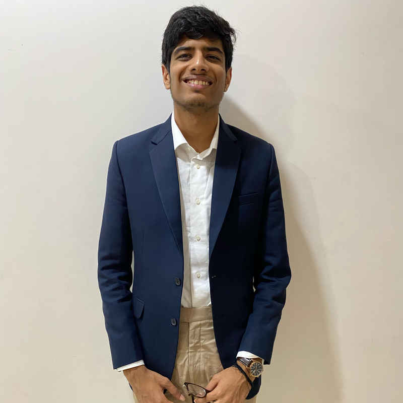

MBA student | Investing enthusiast | Curious across disciplines
I am an MBA student at IIM Bangalore and an exchange student at HEC Paris, with a background in economics and finance. I am fascinated by investing because it brings together analytical rigour, human behaviour, and the challenge of making decisions under uncertainty. I enjoy questioning conventional wisdom, testing ideas from different angles, and connecting lessons from seemingly unrelated fields: from sport and strategy games to markets and philosophy
Connect with meExchange student
Exploring management and business in an international academic environment
MBA
Institute Rank 3, reflecting a strong academic record and a commitment to learning
B.Sc. in Economics and Finance
Built a foundation in economic reasoning, financial analysis, and markets
Associate II | October 2023 – May 2025
Analyst | June 2023 – October 2023
M&A Research Intern | June 2022 – August 2022
Equity Research Intern | May 2021 – July 2021
I enjoy watching and playing sports, especially cricket and football. Sport is also a way for me to think about strategy, decision-making, teamwork, and how small choices can change an outcome.
Strategy board games appeal to my love of reasoning through uncertainty, anticipating other people's decisions, and adapting when a plan changes
I like exploring stories and ideas that examine human nature, values, and the way people make sense of the world
Travelling helps me see familiar questions from a different perspective. More broadly, I enjoy connecting ideas across domains and applying a lesson from one field to a problem in another
In the long term, I hope to build my own investment firm. For me, that ambition starts with learning to think independently, understand businesses deeply, and make decisions with both conviction and humility